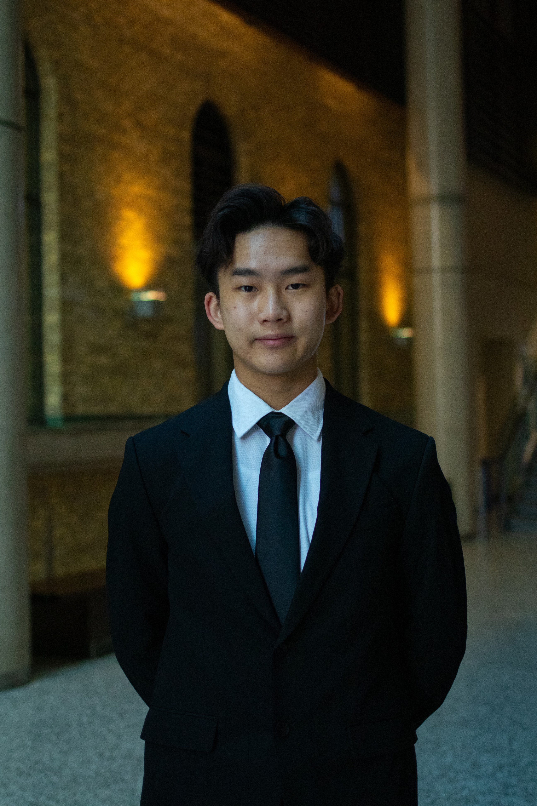

Cheuk Hin Justin Lo

Contact Me | Resume PDF
Education
- Univeristy of Toronto
Bachelor of Applied Science CGPA: 3.74
- Bayview Secondary School
Ontario Secondary School Diploma Average: 98.85
Work Experience
- Kitchen Helper | Elephant Grind Coffee
- Ensured the customers were satisfied through effectively washing dishes and constant communication with co-workers to fill short-staffed positions
- Maintained a neat work environment through regular cleaning
Projects / Extracurricular
- Team Member | University of Toronto Human Powered Vehicle Design Team
- Develop aircraft ribs by performing complete wet layup processes on different composite materials such as fibreglass and carbon fibre and operating on various machineries such as CNC machine
- Prepare prepreg composites by vacuum sealing and baking in a box oven
- Adapted electronics circuit knowledge to build a 555 timer using a solderless breadboard
- Site Specialist / Team Member | APS111 Design Team
- Recognized that wheelchair users cannot access Hart House Theatre backstage and solved the problem by developing a set of solutions by altering existing solutions using benchmarking
- Represented design through engineering drawing (hand-drawn)
Skills
-
Languages: Python, C, MatLab, HTML
- CAD: Fusion360, AutoCAD, Adobe Creative Softwares
- Hardware: Solderless breadboarding, soldering, machining
- MicrosoftWord, Excel, Powerpoint
Awards, Certifications and Scholarships
- York Region District School Board Academic Accomplishment Award
- Ontario Professional Engineers Foundation For Education Entrance Scholarships
- University Of Toronto Scholar